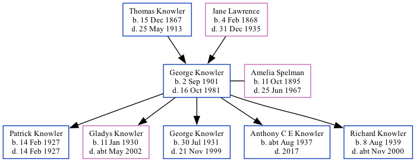

George Thomas Knowler 1901 - 1981 [ Home ] | [ Calendar ] | [ Surnames Index ] | [ Family History ]A farm horseman and the son of Thomas Knowler (an agricultural laborer) and Jane Lawrence George Knowler , the first cousin twice-removed on the mother's side of Nigel Horne , was born in Woodnesborough, Kent, England on Sep 2, 19011,2,3,4,5 and married Amelia Spelman (with whom he had 5 children: Patrick , Gladys Kathleen M , George Thomas Patrick , Anthony C E and Richard Henry J ) in Birchington, Kent, England on Oct 3, 19256 (Our Lady and St Benedict).
Throughout his life, he lived at Shingleton Cottages, Eastry, Kent on Apr 2, 19111 ; and on 2 Malthouse Cottages, Mongeham Road, Great Mongeham, Kent on Sep 29, 19392 .
He died on Oct 16, 1981 on Ramsgate General Hospital, West Cliff Road, Ramsgate, Kent4 .
Parents Thomas William was born on Dec 15, 1867Jane was born on Feb 4, 1868Children Patrick was born on Feb 14, 1927Gladys Kathleen M was born on Jan 11, 1930George Thomas Patrick was born on Jul 30, 1931Anthony C E was born c. Aug 1937Richard Henry J was born on Aug 8, 1939Citations 1911 England Census Online publication - Provo, UT, USA: Ancestry.com Operations, Inc., 2011.Original data - Census Returns of England and Wales, 1911. Kew, Surrey, England: The National Archives of the UK (TNA), 1911. Data imaged from the National Archives, London, England. (Relation to Head of House: Son) 1939 Register - Findmypast (was recorded at this address) England & Wales deaths 1837-2007 - Findmypast England & Wales, Death Index: 1984-2005 Online publication - Provo, UT, USA: The Generations Network, Inc., 2007.Original data - General Register Office. England and Wales Civil Registration Indexes. London, England: General Register Office. © Crown copyright. Published by permission of the Cont England & Wales, FreeBMD Birth Index, 1837-1915 Online publication - Provo, UT, USA: The Generations Network, Inc., 2006.Original data - General Register Office. England and Wales Civil Registration Indexes. London, England: General Register Office. © Crown copyright. Published by permission of the Cont England & Wales, Marriage Index: 1916-2005 Online publication - Provo, UT, USA: The Generations Network, Inc., 2009.Original data - General Register Office. England and Wales Civil Registration Indexes. London, England: General Register Office. © Crown copyright. Published by permission of the Cont Media England & Wales deaths 1837-2007 Transcription - BMD-D-1981-4-AZ-000664-027 1939 Register Transcription - TNA-R39-1707-1707A-021-38 England & Wales births 1837-2006 - BMD/B/1901/4/AZ/000344/057 England & Wales marriages 1837-2008 - BMD/M/1925/4/AZ/000665/069 1911 England, Wales & Scotland Census Transcription - GBC-1911-RG14-04542-0163-3 Family Tree Map
Generated by Ged2Site . Last updated on Apr 1, 2025